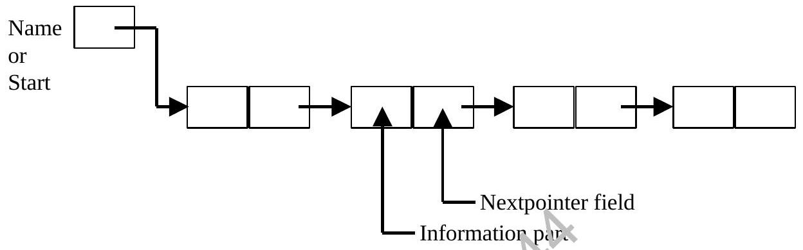
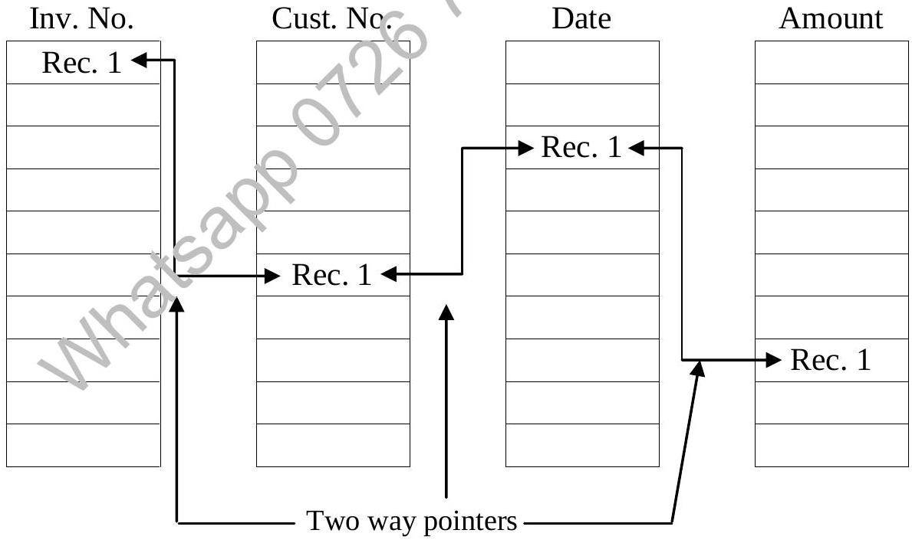
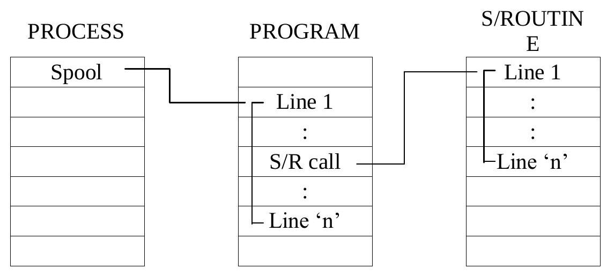
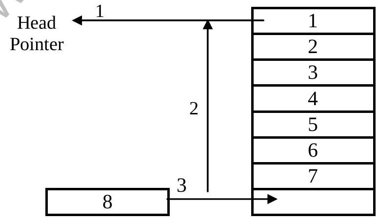
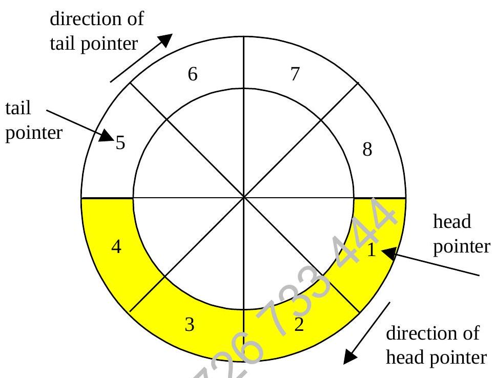

Chapter 7 : Data Structures (I) (Continued)
7.5 Linked List
A linked list, or one-way list, is a linear collection of data elements, called nodes, where the linear order is given by means of pointers. That is, each node is divided into two parts : the first part contains the information of the element, and the second part, called the link field or next pointer field, contains the address of the next node in the list.
Example: Linked list with 3 nodes
A more useful application of a list is a linked list. The Invoice Number, Customer Number, Date and Amount are linked by a two way pointer.
The list after ordering
Accessing any of the data items allows the access to the others
Example:
A LINKED TABLE holding KEY numerical values in ASCENDING order of which the POINTER 'LISTSTART' holds the value 2, contains:
LISTSTART = 2
| INDEX | KEY | LINK TO NEXT RECORD |
|---|---|---|
| 1 | 84 | 2 |
| 2 | 96 | 3 |
| 3 | 105 | -1 |
- Re-write the table as it would appear if we added, at INDEX 4 THE KEY 95 and KEY 110 at INDEX 5 (4).
- Show the original table as it would appear if KEY 96 were DELETED (2).
Solution for part c(i);
LISTSTART = 2
| INDEX | KEY | LINK TO NEXT RECORD |
|---|---|---|
| 1 | 84 | 4 |
| 2 | 96 | 3 |
| 3 | 105 | 5 |
| 4 | 95 | 1 |
| 5 | 110 | -1 |
Solution for part c(ii)(to be solve in class)
7.5.1 System Lists
Program location in main memory and its control during execution by linked list for example calling of subroutines by main programs.
By managing pointers locations, the economy of storage and speed of execution are achieved.
Program Lists with pointers
7.6 Queues
The queue is yet another data structure which differs in a number of ways from the stack. It may be used in real-time processing, for scheduling of jobs in the context of an operating systems or in other similar applications such as data transfer.
It is a FIFO (First-In-First-Out) structure which means that the first item to enter the queue is the first item to leave and new items always get added to the end of the queue.
As with the stack we can represent a queue by a one-dimensional array with the need for two pointers. The first to indicate the front of the queue and the other to indicate the next space capable of holding an element joining the queue, these being the head and tail pointers respectively.
A method of inserting and retrieving data is similar to a stack but on 'FIRST-IN-FIRST-OUT'
1. 'DEQUEUE' (Remove from head)
2. 'LIST'
3. 'ENQUEUE' (Add to tail)
The queue operation is awkward because the elements are pushed to the front and new elements are added from the bottom, sometimes referred to as a PUSHUP STACK or LIST.
Other types of queues can be the DEQUE (or DOUBLE - ended - Queue) and the WRAP - AROUND - STACK.
7.6.1 DEQUE
Data are push and pop (add and delete) from both ends.
7.6.2 Wrap-Around-Stack (Circular queue)
In this type the tail pointer cannot be pushed out but moves in a circular manner ahead of the head pointer.
7.7 Stacks
The stack is an example of a data structure found quite commonly in computing which is especially used in system software. They may by used to carry out stages of a calculation, for handling interruptions in translation programs or to pass information from a main program to a subprogram.
The main physical characteristic of a stack is that it is a LIFO (Last-In-First-Out) structure. It can be likened to a pile of plates in which it is easy (if sometime a little unstable) to add extra plates to the top. Plates can also be easily removed from the top of the pile, but not by extrication from the bottom of the pile.
We can represent a stack as a one-dimensional array with two pointers, one pointing to the base of the stack (to identify the first element) and the other pointing to the position of the first available element, this being called the stack pointer. These are only two possible operations that can be done with a stack, namely adding an item to the top of the stack (called stacking or pushing) and the other is that of popping, or taking an item off the stack.
An example of Stack Operation.
DIM S(50)
REM **PUSHING SEQUENCE**
IF P <= 50 THEN 120
PRINT "STACK FULL"
STOP
120 LET S(P) = E
LET P = P + 1
GOTO 90
:7.7.1 Corruption by Machine
Machines and computers do not 'clean up'!
A 'POP' operation merely copies a datum from a memory location to another leaving the previous datum intact.
For a push, make sure the location is empty else 'Invoice'; into a location previously holding a longer string 'calendar' on retrieving gives 'Invoicer'.
Hence Corruption of Data!!
Points to Remember (Data Structures I)
- An array is a storage area in primary memory. Each data entry stored in an array is accessed with a single subscript or index value.
- Arrays can be one-dimensional or multi-dimensional.
- Arithmetic operations applied to a two-dimensional table result in a matrix.
- Linked list is data structures that permit records in a file or entries in an array to be maintained in logical order without remaining in physical order.
- Linked list uses a pair of pointers: the head (list) pointer for the start of the list and tail pointer for the last entry.
- Stacks are data structures which exhibit behaviour known as LIFO (last in, first out).
- Additions to a stack are 'PUSHED' onto the top of it and deletion are 'POPPED' singly off the top.
- Stacks use a pair of pointers: the head (or base) and the stack pointer (top).
- Queues are data structures that exhibit FIFO (first in, first out) behaviour.
- Queues use a pair of pointers: the head pointer, and the tail pointer which indicate the next available location.